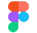

Habilidades Aplicadas

HTML5

CSS3 (con Bootstrap & Tailwind)

JavaScript

Figma (UI/UX)
Diseño y desarrollo de sitio web reflexivo sobre psicoanálisis y filosofía. De la identidad visual simbólica al enfoque UX responsive y accesible. Incluye ilustraciones, arquitectura clara y experiencia inmersiva.
Ver ProyectoPalabra y Abismo necesitaba una web visualmente atractiva y accesible para difundir contenidos de psicoanálisis y filosofía contemporánea, conectando con una audiencia joven interesada en el pensamiento crítico y el mundo interior..
HTML5
CSS3 (con Bootstrap & Tailwind)
JavaScript
Figma (UI/UX)